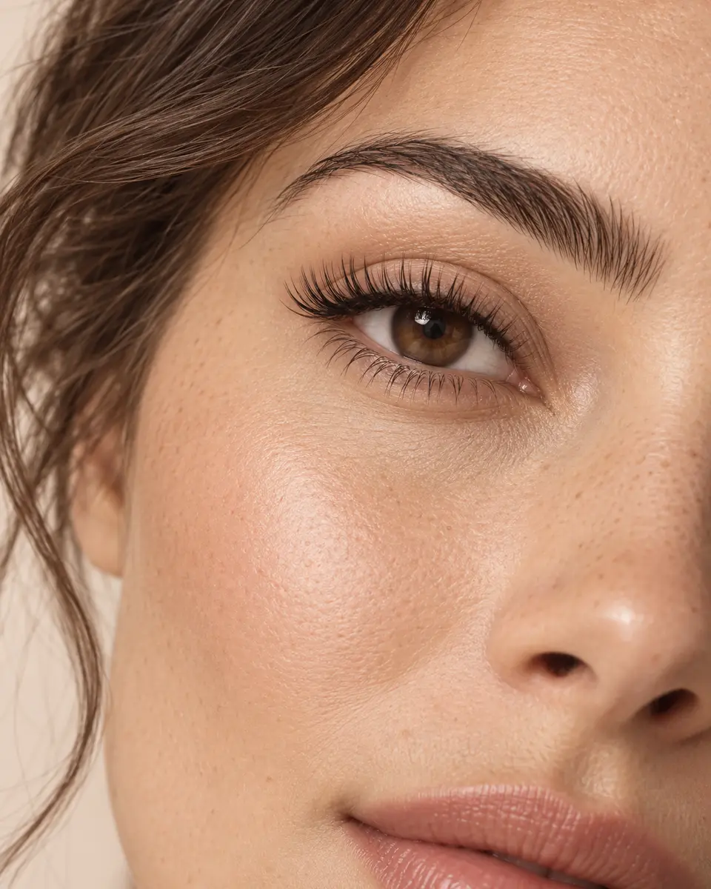

Beleza dos cílios
Técnicas, curvaturas e efeitos a definir.
ESPECIALIDADE 02
Leveza e definição para valorizar o olhar sem perder a naturalidade.

O CUIDADO
Esta é uma primeira proposta de serviços. Técnicas, efeitos, durações e valores serão ajustados com Ellen.
Técnicas, curvaturas e efeitos a definir.
Periodicidade e disponibilidade a confirmar.